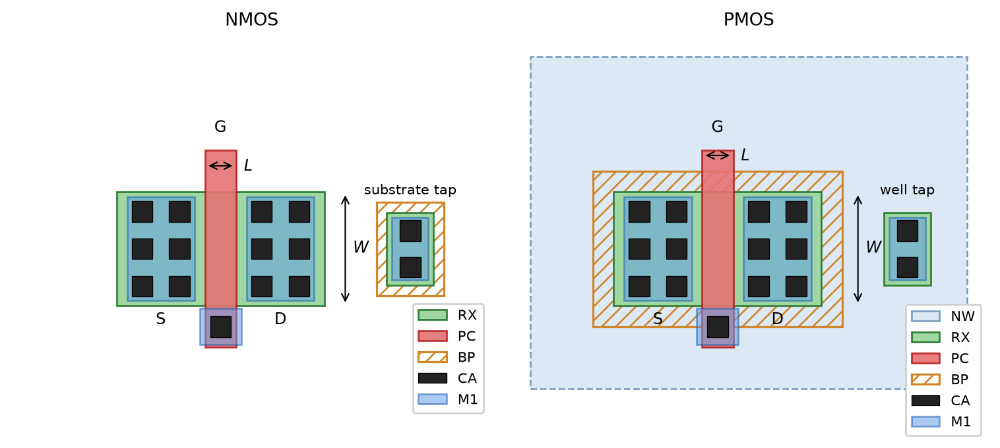
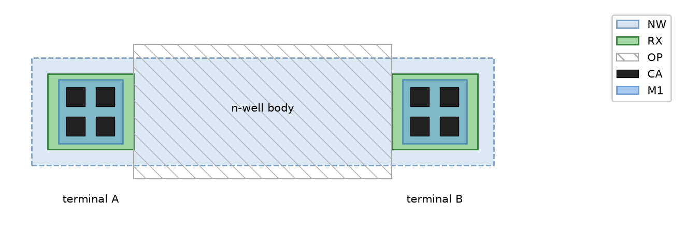
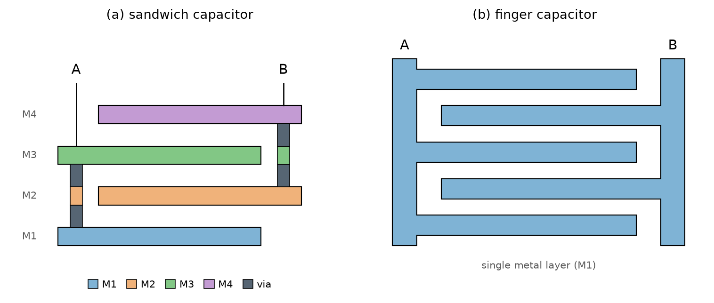
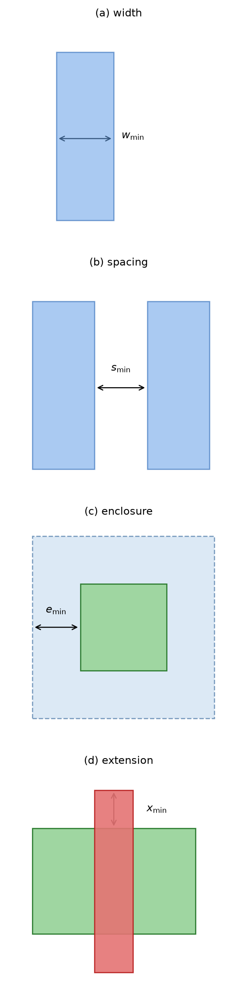
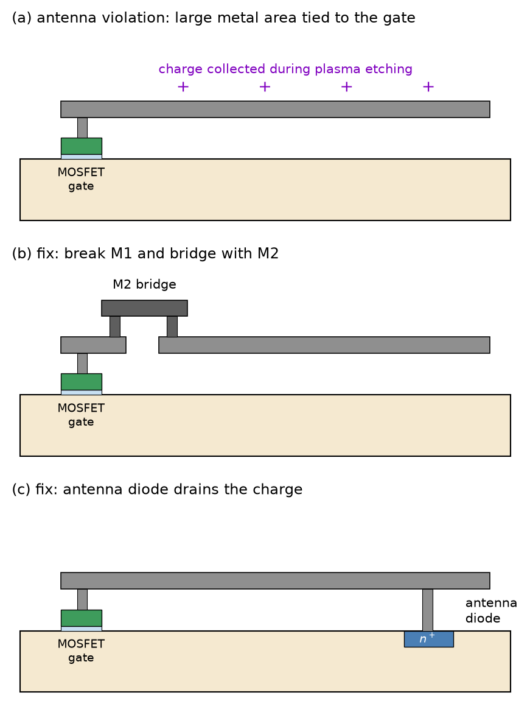
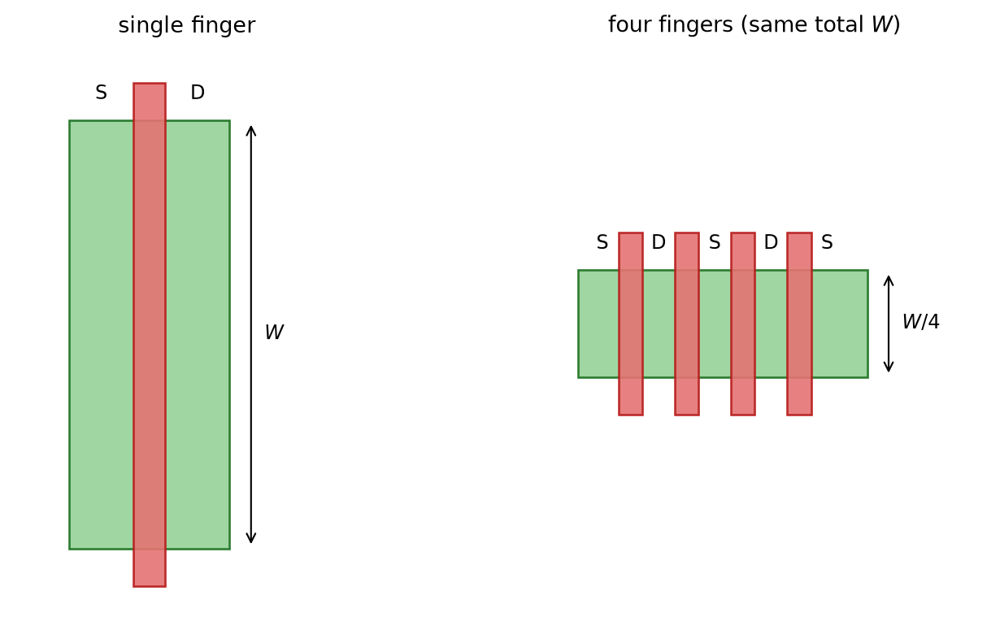
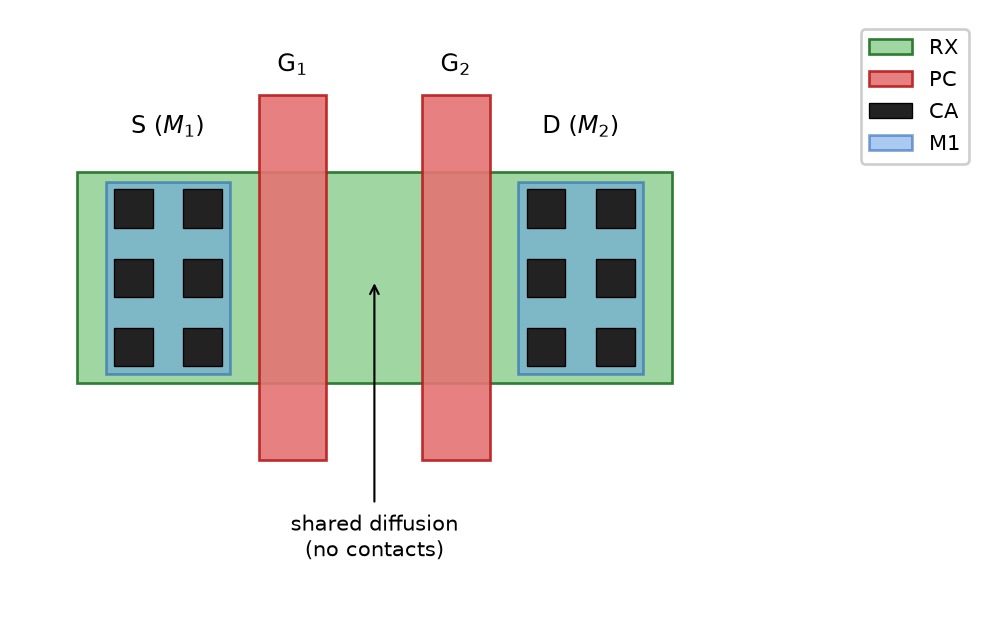
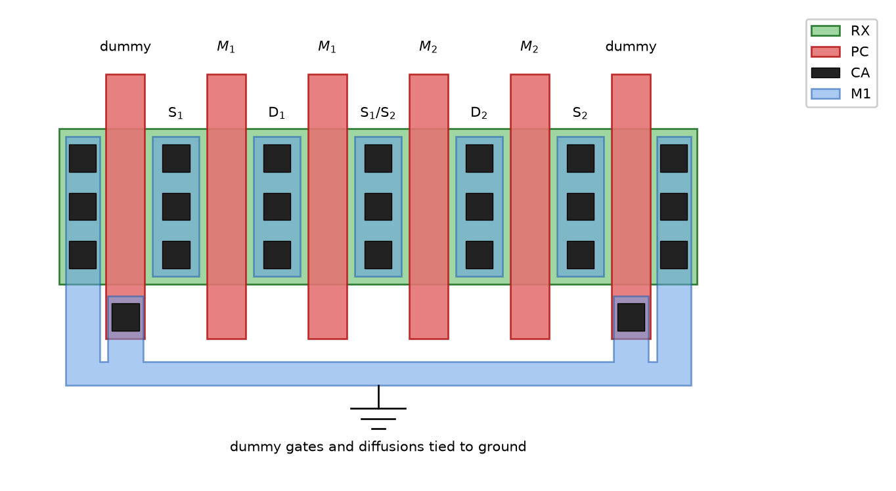

The Layout
Design of Complex Integrated Circuits
4 The Layout
4.1 Files and Tapeout
4.2 Generic Layer Definition
Generic Layer Definition
| Layer name | IHP SG13 | Purpose |
|---|---|---|
RX |
Activ |
\(n^+\) (RX) or \(p^+\) (RX in BP) diffusion regions (e.g., S/D of MOSFETs) |
PC |
GatPoly |
Polysilicon gate |
NW |
NWell |
\(n\)-well region |
BP |
pSD |
\(p\)-implant marker (i.e., blocks the \(n\)-implant) |
OP |
SalBlock |
Silicide blocking over PC and RX |
CA |
Cont |
Contact (connects RX or PC to M1) |
M1 |
Metal1 |
First-level metal |
V1 |
Via1 |
Via connecting M1 to M2 |
M2 |
Metal2 |
Second-level metal |
V2 |
Via2 |
Via connecting M2 to M3 |
M3 |
Metal3 |
Top metal, mostly aluminum, to facilitate wire-bond packages |
PAD |
Passiv |
Opening in the passivation to contact the top metal for pads |
4.3 Devices
4.3.1 NMOS and PMOS Transistors
- The MOSFET is created by the intersection of
RXandPC; this intersection defines \(W\) and \(L\) of the transistor. The areas ofRXnot covered byPCbecome the source and drain regions. - Whether a device is NMOS or PMOS is decided by whether the
RXshape is contained inside aBPregion (RXplusBPis \(p^+\),RXwithoutBPis \(n^+\)). - A \(p^+\) substrate contact is created by drawing
RXcovered byBP(outside the n-well). - An \(n^+\) well contact is created by drawing plain
RXlocated insideNW.
NMOS and PMOS Transistors
- The
NWmust surround the PMOS with sufficient margin. - The layer
BPis a pure marking layer, assisting mask generation and device extraction from the layout. CAcontacts connect source/drain/gate as well as the \(p^+\)/\(n^+\) contacts toM1.
NMOS and PMOS Transistors
4.3.2 Polysilicon Resistor
\[ R = \rho \frac{L}{t \cdot W} = R_\square \frac{L}{W} \tag{48}\]
Polysilicon Resistor

PC strip is blocked by the OP shape, whose intersection with PC defines the resistor body of length \(L\) and width \(W\); the BP marker selects \(p\)-type poly.
4.3.3 Diffusion Resistor
Diffusion Resistor

NW strip, contacted at both ends by \(n^+\) diffusions (RX); the OP shape blocks the silicide over the body.
Diffusion Resistor
| Type | \(R_\square\) (Ω/\(\square\)) | Process tolerance (\(\pm 4 \sigma\)) | Matching | Temp. coefficient |
|---|---|---|---|---|
Silicided \(n^{++}\)-poly (rsil) |
7 | ±12 % | 0.6 %µm | 0.3 %/K |
Blocked \(p^+\)-poly (rppd) |
260 | ±10 % | 1.5 %µm | 0.017 %/K |
Blocked compensated poly (rhigh) |
1360 | ±15 % | 4.8 %µm | −0.23 %/K |
4.3.4 Capacitors
Capacitors

Capacitors
- The density of MOM capacitors scales with smaller design rules and the number of metal layers. The lower metal layers should be skipped if the parasitic capacitance to the substrate is a concern.
- The process may offer a specialized metal-insulator-metal (MIM) capacitor (density on the order of fF/µm²) using extra masks and processing steps, offering higher specific capacitance and low parasitics at extra cost.
Capacitors
- For high capacitance density, or where nonlinearity is not critical, the MOSFET gate capacitance can be used, as the gate oxide is tightly controlled in manufacturing.
- In IHP SG13, a MIM capacitor between
Metal5andTopMetal1is available (ca. 1.5 fF/µm²); the MOM finger capacitor has ca. 0.3 fF/µm², so when using 4 metal layers the effective capacitance is comparable to the MIM capacitor.
4.3.5 Diodes
4.3.6 Bipolar Junction Transistors
Bipolar Junction Transistors

4.4 Design Rules
Design Rules
- The design rules are provided as a specification document and as a run set for layout verification tools (e.g., KLayout, Magic, Cadence Pegasus, or Siemens Calibre).
- The rules are either given in relative dimensions (“lambda rules”) for easy scaling, or in absolute dimensions (“micron rules”).
- Modern CMOS technologies typically involve several hundred to thousands of layout design rules.
Design Rules
- Consider the relatively large spacing rule between
RXandNW: it pays off to group PMOS and NMOS transistors together, respectively!
Design Rules

RX in NW), and (d) minimum extension of one shape beyond another (e.g., the poly endcap over RX).
4.4.1 Density Rules
4.4.2 Antenna Rules
Antenna Rules

M1 wire connected to a gate collects charge during plasma etching and can destroy the gate oxide; (b) breaking the M1 wire and bridging with M2 limits the charge collected while M1 is etched; (c) an antenna diode drains the collected charge harmlessly into the substrate.
4.5 Analog Layout Techniques
4.5.1 Multi-Finger Transistors
Multi-Finger Transistors

Multi-Finger Transistors

4.5.2 Matching
- The devices are constructed from identical unit devices: a MOSFET with width \(4W\) matches a transistor with width \(2W\) only if both are constructed from unit transistors of equal width (and equal \(L\)—remember that \(V_\mathrm{th}= f(L)\) due to SCE/RSCE)!
- The devices are oriented in the same direction, and the current flow in all matched devices has the same direction—avoid mirroring or “snaking”!
Matching
- The devices are surrounded by similar structures; to achieve this for edge devices, spend dummy elements (see Figure 50).
- To combat process gradients, place the matched devices on the symmetry line of the gradient (if known), or use common-centroid arrangements (see Figure 52).
- For ac symmetry, consider the wiring of \(R\) and \(C\), and make the wiring parasitics as symmetrical as possible.
Matching
- Consider secondary effects: gate shadowing (implant variation due to topographical differences and tilted implant angle), mechanical stress from shallow-trench isolation, and non-uniform doping due to the well-proximity effect (dopants scattering off the well-mask edges cause doping variations, especially impacting PMOS).
Matching

Matching

OP runs across the whole array so that every resistor body sees the same edge.
Matching

Matching

4.5.3 Floor Planning
- Locations of pins and interfaces; distribution of \(V_\mathrm{DD}\) and \(V_\mathrm{SS}\) pins; isolation of sensitive I/O signals.
- Cell sizes and aspect ratios (allowing an area-efficient placement of the macros).
- Isolation between different circuit blocks (e.g., keep sensitive analog blocks away from noisy digital blocks).
- Power and clock distribution; wiring channels for signal buses.
- The package type used (wire-bond or flip-chip).
4.6 Additional Layout and Mask Structures
Additional Layout and Mask Structures
- Seal ring: The seal ring runs along the circumference of the chip and seals the singulated die against moisture and other contamination. It also acts as a crack-stop, protecting the inner die from cracks formed while sawing the wafer into individual dice. Since the seal ring forms a closed metal loop around the chip, crosstalk considerations may suggest connecting it to a dedicated pin.
Additional Layout and Mask Structures
- Scribe line (kerf): This is where the chip is cut with a diamond saw or a laser.
- Alignment marks: Used to align the different masks during processing.
- Critical-dimension structures: Measured after processing to verify proper polysilicon or metal etching, enabling closed-loop process control.
- Vernier structures (“Nonius”): Closely spaced parallel lines on two different layers that allow judging the inter-layer alignment.
Additional Layout and Mask Structures
- Test structures: Chains of contacts and vias, as well as test transistors, are used to evaluate contact resistance, transistor parameters, and other important process parameters. They are usually placed in the scribe lines or on dedicated process control monitor (PCM) test chips; the PCM measurement reports can often be obtained from the foundry.
4.7 Layout Checks
Layout Checks
- DRC (design rule check): a program/run set that automatically checks the layout data for compliance with the design rules of the wafer fab. All flagged errors must be corrected; otherwise, manufacturing issues can occur.
- LVS (layout versus schematic): a netlist extracted from the layout data is compared against the schematic netlist, checking connectivity of signals and power as well as device sizes (\(W\) and \(L\) of transistors, dimensions of \(R\) and \(C\)). Usually, all flagged errors must be corrected.
Layout Checks
- ERC (electrical rule check): additional checks not covered by DRC or LVS, such as floating MOSFET gates, floating wells, or antenna rules. Sometimes common mistakes (e.g., high-resistance connections) are covered in the ERC run set and checked automatically.
4.8 Layout Extraction
Layout Extraction
- Wiring adds delays (\(R\), \(L\), \(C\)) and coupling (\(k\), \(C\)) to the circuits.
- Layout-dependent effects (LDE), like well proximity, can only be modeled with information about the actual layout of the devices and their surroundings.
- Substrate effects (like crosstalk) can only be extracted from the actual placement.
Layout Extraction
- C-decoupled: The parasitic capacitance of each node’s wiring is added as a lumped capacitor to ground. There is almost no impact on simulation speed (no new nodes are introduced), but no crosstalk between nodes is captured. This extraction can be used on fairly large circuits to add a first level of realism.
Layout Extraction
- C-coupled: Parasitic capacitances to the substrate and between nodes are added; capacitive crosstalk is modeled, but no inductive effects. Moderate impact on simulation speed (more elements in the circuit matrix).
- RC-extracted: Parasitic \(R\) and \(C\) of the wiring are extracted and added to the netlist, yielding a realistic model of performance and crosstalk without inductive effects. This has a large impact on simulation speed, as many new nodes are introduced; this mode should be used for circuit blocks of moderate complexity.
Layout Extraction
- RLCK-extracted: Parasitic \(R\), \(C\), \(L\), and \(k\) of the wiring are extracted, resulting in a very accurate simulation including the main crosstalk effects—but the circuit network gets much larger, impacting simulation time and convergence.
- EM simulation: Highest accuracy; the resulting \(S\)-parameters are either used directly in frequency-domain simulations or transformed into equivalent lumped-element circuits. Huge simulation-time impact, but valid to very high frequencies (> 100 GHz); usually only suitable for individual circuit blocks.
Layout Extraction
Parasitic Extraction with KLayout-PEX
Our open-source parasitic extraction tool KLayout-PEX (invoked as kpex) implements several of these extraction levels for KLayout, using different engines (an analytical 2.5D engine, a wrapper around MAGIC, and the FasterCap 3D field solver) that trade off speed against accuracy. Supported PDKs include IHP SG13G2 and SkyWater sky130A. Further information can be found in the online documentation.
References
Allen, Phillip E., and Douglas R. Holberg. 2012. CMOS Analog Circuit Design. 3rd ed. Oxford University Press.
Razavi, Behzad. 2017. Design of Analog CMOS Integrated Circuits. 2nd ed. McGraw-Hill Education.
Schmickl, Stefan, Tim Schumacher, Patrick Fath, Thomas Faseth, and Harald Pretl. 2020. “A 350-nW Low-Noise Amplifier with Reduced Flicker-Noise for Bio-Signal Acquisition.” Austrochip Workshop on Microelectronics, 9–12. https://doi.org/10.1109/Austrochip51129.2020.9232981.